Below are some screenshots from sample Centrallix applications as well as
actual live applications and some 'experiments'. Enjoy!
| 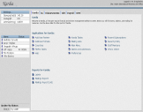 |
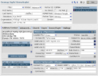 |
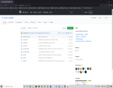 |
|
A screenshot of the Kardia main menu.
|
A screenshot of the Karida partner management page. The information is,
for obvious reasons, fake.
|
A picture of the GitHub main Centrallix page. You can find this link under Download.
It has all the Centrallix files, including ones used to contruct this very website!
|
| 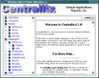 |
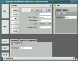 |
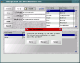 |
| The 'sample applications' browser, running under Netscape with
Centrallix 0.7.4 |
An application demoing tabs, windows, four simultaneous datasources,
and used for testing Centrallix's "obscure/reveal" mechanism. Running
under Netscape with Centrallix 0.7.4. |
A simple application with two linked datasources, one having both a
form and a tabular view, with the warning box appearing due to
unsaved data. |
| 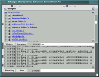 |
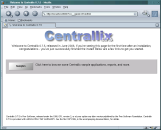 |
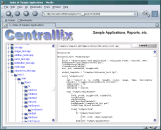 |
| This is the obscure/reveal application again, but this time showing
the debugger window allowing browsing of the DOM, viewing the debug
log, and evaluating of expressions (yes, you can modify the DOM with
this!) |
The Centrallix 0.7.5 "successful install" page running under Mozilla.
This also demonstrates the auto-scaling function for applications so
the application properly fits the size of the browser window. |
The "sample applications" browser again, this time under Mozilla
with Centrallix 0.7.5. Notice the ability to view the structure of
the object canvas app (treeview on the left) as well as view the
source to the app (pane on the right). |
| 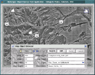 |
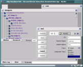 |
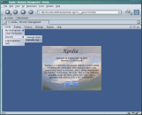 |
| And here is a demonstration application for the "Object Canvas" widget,
displaying icons on a map, derived from a data source. The form in
the foreground allows querying and modification of objects on the
map. The data source in this case is a CSV file. And, yes, if you
modify an X or Y coordinate, the icon on the map will indeed move! |
Here is the debug window from the obscure/reveal application running
under Mozilla. In the foreground is a window in 'modify' mode for
editing data for a month of the year. |
Also running under Mozilla and Centrallix 0.7.5, here is a quickie
'experiment' application for the Kardia project. Mostly we wanted
to test the behavior of the drop-down menu widget and popup windows,
and mess with the widget templating mechanism as well. |

{kind=link}
{kind=link}
{kind=link}
{kind=link}
{kind=link}
{kind=link}
{kind=link}
{kind=link}
{kind=link}
{kind=link}
{kind=link}
{kind=link}